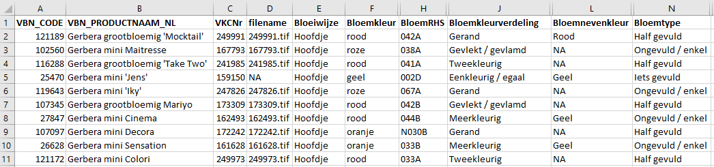
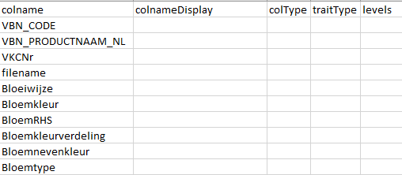
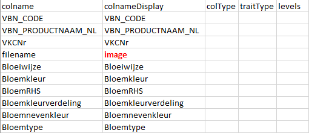
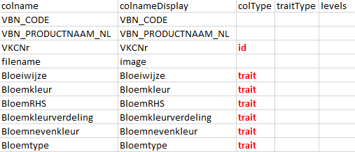
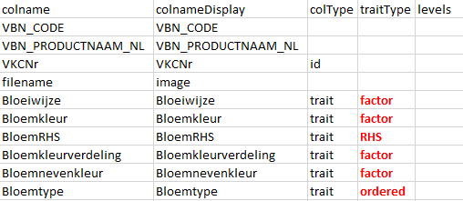
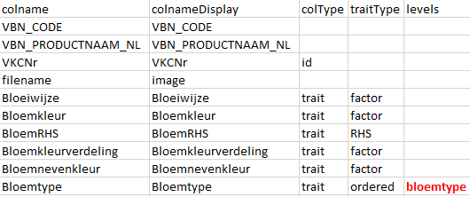
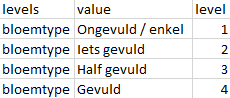

Metadata.RmdDe app ontwikkeld in het Modoma project is in eerste instantie ontwikkeld voor gebruik met vier datasets: FloricodeGerbera, FloricodeRose, NaktuinbouwGerbera en NaktuinbouwRose. Het is echter ook mogelijk om de app te gebruiken voor andere datasets met data voor bijvoorbeeld andere gewassen. Om dit te kunnen doen moeten deze datasets aan een aantal voorwaarden voldoen en er moet een zogeheten metadata bestand behorend bij de dataset beschikbaar zijn. Dit metadata bestand beschrijft welke kolommen in de data welke informatie bevatten en hoe deze informatie in de app geïnterpreteerd moet worden. Dit is voornamelijk van belang bij het berekenen van afstanden tussen de verschillende variëteiten.
Dit document beschrijft de voorwaarden waaraan een nieuwe dataset moet voldoen en zal een stap voor stap beschrijving geven van het maken van een metadata bestand dat door de app gebruikt kan worden. Hierbij zal de FloricodeGerbera data als voorbeeld worden gebruikt. Voor een handleiding voor het gebruik van de app zie ………
Als deze app wordt gebruikt voor het bekijken van andere datasets dan de vier voorbeeld datasets, dan moeten deze datasets aan de volgende voorwaarden voldoen:
Er moet een kolom in de data aanwezig zijn waarin een unieke referentiecode per variëteit staat. De naam van deze kolom is irrelevant. Bij de Floricode bestanden is dit VKCNr en bij Naktuinbouw RVPnr.
Er moet een kolom in de data aanwezig zijn met daarin de naam van de file met de afbeelding van de variëteit. .tif en .jpg files ondersteund. De naam mag leeg zijn. Er zal dan geen afbeelding worden getoond. In zowel de Floricode als de naktuinbouw bestanden staan de verwijzingen naar de files met afbeeldingen in de kolom filename.
Een nieuwe dataset moet op de juiste manier ingelezen worden door de app. De app moet de kolom herkennen waarin de referentiecode staat, files met foto’s moeten correct gekoppeld worden en de verschillende kenmerken moeten als zodanig herkend worden. Om dit voor elkaar te krijgen moet de app weten hoe de dataset is opgebouwd. Hiervoor kunnen we een zogenaamd metadata bestand gebruiken.
Hoe zo’n metabestand opgebouwd kan worden, wordt hieronder beschreven aan de hand van de Floricode Gerbera data.
Voor een eerste inzicht in de data kijken we eerst naar een aantal geselecteerde rijen en kolommen uit het bestand. Het aantal rijen is beperkt tot 10 en een aantal kolommen zijn verborgen voor de duidelijkheid. Voor het aanmaken van het metadata bestand maakt dit geen verschil.
We zien twee kolommen met een referentiecode, VBN_CODE en VKCNr. In de app willen we VKCNr gebruiken als referentie en zullen we VBN_CODE grotendeels negeren. In de kolom VBN_PRODUCTNAAM_NL staat de naam van de variëteit, de kolom filename geeft de van het bestand waarin de foto van de variëteit staat. De overige kolommen bevatten kenmerken van de betreffende variëteit. In dit bestand zijn onbekende/missende waarden aangegeven met NA. Leeg laten van de betreffende velden in het bestand kan ook.

Het metadata bestand heeft een vaste structuur, een .csv bestand met daarin vijf kolommen, colname, colnameDisplay, colType, traitType, levels. Een verder leeg bestand met deze structuur is beschikbaar via ….. Door dit bestand als basis te gebruiken en verder in te vullen zal de structuur altijd herkend worden door de app.
De eerste stap is het toevoegen van alle kolommen in het nieuwe databestand in de kolom colname in het metadatabestand. Voor ons voorbeeld geeft dat dit:

In de kolom colnameDisplay komen de namen van de kolommen zoals deze getoond moeten worden in de verschillende grafieken en tabellen in de app. In het voorbeeld is ervoor gekozen om de filename kolom in de app te tonen met de naam image. Alle andere kolommen behouden hun oorspronkelijke naam. Een alternatieve naam kan nuttig zijn bij hele lange kolomnamen. Om tabellen overzichtelijk te houden kan dan voor een afgekorte vorm gekozen worden.

De volgende stap is per kolom aangeven welk type informatie in de kolom wordt weergegeven. Hiervoor zijn drie mogelijkheden:
id - de kolom waarin het referentienummer staat. Er moet altijd precies één kolom zijn waarvoor dit het geval is. In de metadata moet id dus precies één keer voorkomen in de kolom colType. In ons voorbeeld staat het referentienummer in de de kolom VKCNr. Voor die kolom wordt colType dus “id”.
trait - de kolommen waarin kenmerken van de variëteiten staan. Deze kolommen zullen in de app gebruikt worden voor het berekenen van afstanden tussen de verschillende variëteiten. In ons voorbeeld staan in alle kolommen vanaf Bloeiwijze kenmerken van de variëteiten. Al deze kolommen worden dus aangemerkt als “trait” in het metadata bestand.
veld leeg laten - de overige kolommen hebben geen speciale functie in de app en voor deze kolommen hoeft geen waarde te worden ingevuld in de kolom colType in het metadata bestand.

In de volgende stap gaan we per kenmerk aangeven wat voor type kenmerk het is. Dit is van belang omdat voor verschillende typen kenmerken afstanden op verschillende manieren berekend worden. Zie voor een uitgebreide uitleg hierover ……. De mogelijke waarden voor traitType zijn
RHS - voor kolommen met RHS kleurcodes. In het voorbeeld is dit alleen de kolom BloemRHS
factor - voor kolommen met categorische variabelen waarvoor in de categorieën geen ordening zit, bijvoorbeeld kleurnamen. In het voorbeeld zijn dit de kolommen Bloeiwijze, Bloemkleur, Bloemkleurverdeling en Bloemnevenkleur.
ordered - voor kolommen met categorische variabelen waarbij in de categorieën een ordening aanwezig is (bijvoorbeeld klein - middel - groot). In het voorbeeld gaat dit om de kolom Bloemtype met de categorieën Ongevuld / enkel - Iets gevuld - Half gevuld - Gevuld.

Als laatste stap moeten we voor de kenmerken met als type ordered de volgorde van de categorieën van het betreffende kenmerk aangeven. Hiervoor gebruiken we een tweede bestand met metadata met drie kolommen, levels, value en level. De inhoud van dit bestand wordt in de app gekoppeld aan de metadata via de kolom levels. Ook voor dit bestand is een lege versie beschikbaar waar alleen de koppen zijn ingevuld via …….
We moeten nu eerst een naam geven aan de categorieën in de geordende factor Bloemtype. Er zijn geen restricties voor deze naam, maar voor de duidelijkheid is het handig een sprekende naam te kiezen. In dit geval hebben we gekozen om “bloemtype’ te gebruiken. Dit komt dus in de kolom levels te staan in het metadata bestand. Daarmee is dit bestand volledig gevuld.

In het metadata bestand voor geordende factoren vullen we nu de eerste kolom met bloemtype. Dit doen we in vier rijen omdat er voor bloemtype vier categorieën zijn. Deze categorieën komen in de kolom value. In de kolom level geven we de volgorde aan. In het voorbeeld krijgt Ongevuld / enkel waarde 1, Iets gevuld waarde 2, Half gevuld waarde 3 en Gevuld waarde 4. De volgorde zou ook andersom kunnen zijn, dus waarde 4 voor Ongevuld / enkel en waarde 1 voor Gevuld. Dit heeft geen invloed op de berekeningen in de app.

Als er verschillende kenmerken in de metadata zitten die dezelfde levels gebruiken dan hoeven die levels niet twee keer gedefinieerd te worden in het bestand met metadata voor geordende factoren. In het oorspronkelijke FloricodeGerbera bestand komt ook een kenmerk Bloemtype1 voor met dezelfde categorieën als Bloemtype. In de metadata zouden we voor zowel Bloemtype als Bloemtype1 in de kolom levels de waarde bloemtype kunnen zetten.